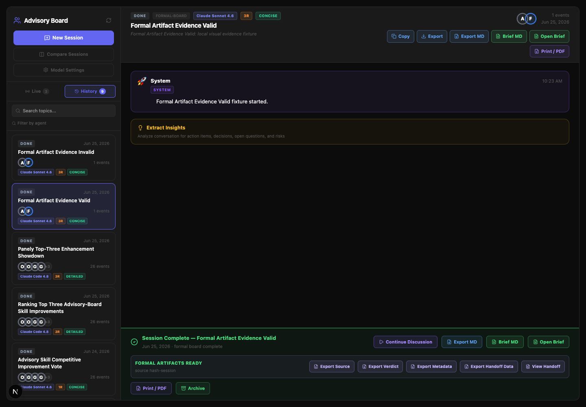
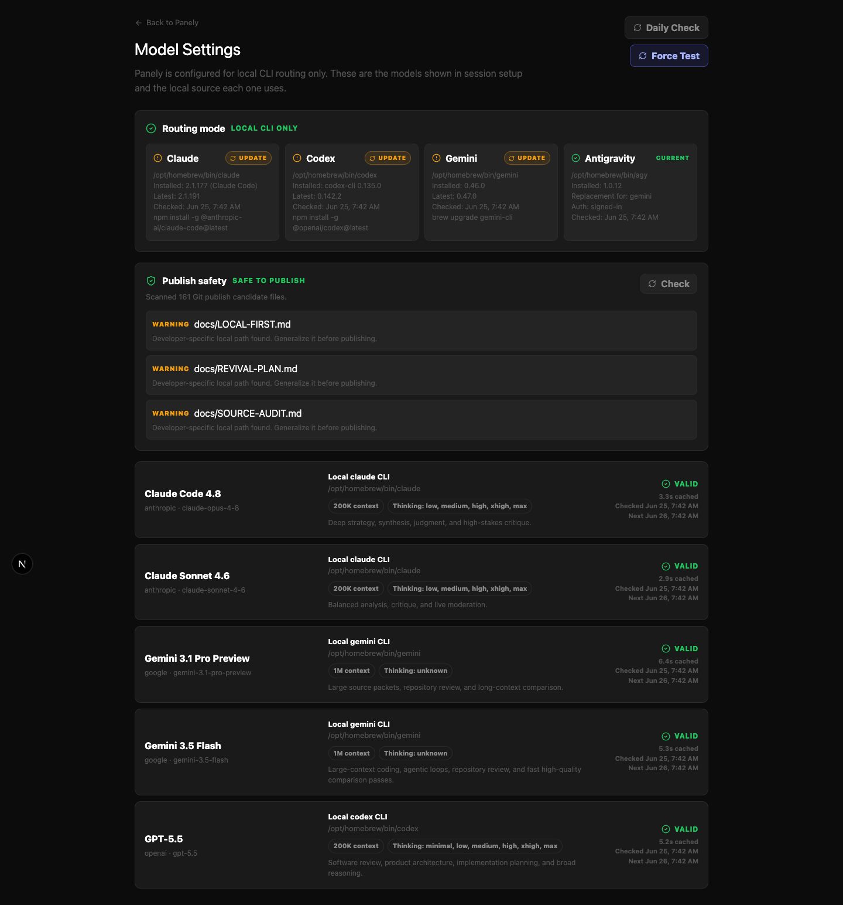
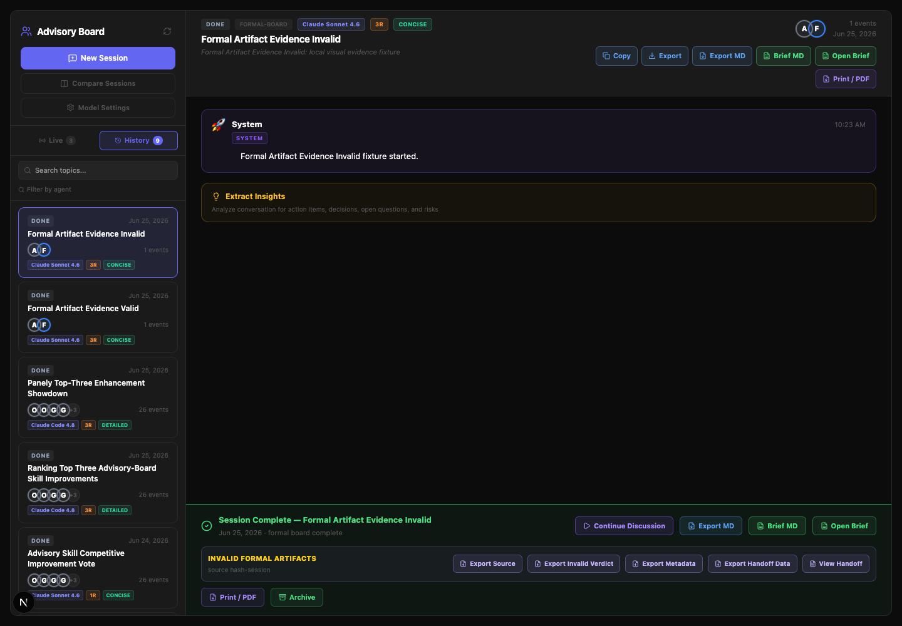
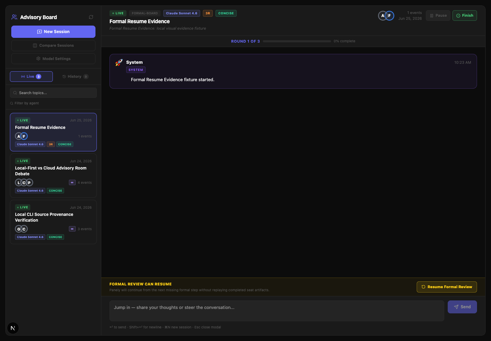

Plan: Panely Formal Board V2 Buildout
Purpose
Build the next seven roadmap items for Panely: first-class formal artifact exports, true resumable local execution, optional convergence Round 3, a stronger and more honest isolation posture, provider-disclosure regression tests, browser smoke evidence, and more deterministic final artifact generation.
Problem
Panely now has a useful Formal Board Review mode, but it still leaves too much value in local files that the UI does not expose, cannot resume a partially completed formal run safely, lacks optional convergence, and still relies on a model-authored final markdown artifact more than a deterministic handoff pipeline. Privacy and UI smoke coverage also need stronger regression protection.
Solution
Implement this as seven tightly-scoped phases with a live status tracker. First expose formal artifacts in the UI. Then make formal runs step-aware and resumable. Add optional Round 3 only after the resume contract is stable. Strengthen isolation metadata honestly, add privacy regression tests, capture browser smoke evidence, and finish by making final handoffs deterministic from structured data first.
Relevant Files
Existing Files
- existing
src/app/api/advisory/sessions/[id]/run/route.ts- Formal Board execution, phases, artifacts, run steps, and completion. - existing
src/lib/advisory/formal-board.ts- formal prompts, verdict builder, same-seat validity, phase definitions. - existing
src/lib/advisory/formal-artifacts.ts- metadata, handoff data, HTML rendering, verdict artifact naming. - existing
src/lib/advisory/run-ledger.ts- run step lifecycle and stale-step helpers. - existing
src/lib/advisory/provider-disclosure.ts- source sensitivity and provider disclosure helper. - existing
src/lib/advisory/decision-record.ts- decision record markdown and formal verdict rendering. - existing
src/app/api/advisory/sessions/[id]/brief/route.ts- brief generation endpoint that can link to formal artifacts. - existing
src/app/brief/[id]/page.tsx- artifact-oriented post-run page. - existing
src/app/api/advisory/sessions/[id]/events/route.ts- event polling and stale step exposure. - existing
src/app/api/advisory/session-plan/route.ts- planner disclosure guard and mode planning. - existing
src/components/advisory/LaunchWizard.tsx- provider disclosure UI, mode selection, and planning launch path. - existing
src/app/advisory/page.tsx- active session UI, completion controls, bottom action bar, and artifact export buttons. - existing
src/types/advisory.ts- session, formal board, verdict, run step, artifact, and decision record types.
New Files
- new
src/lib/advisory/formal-resume.ts- pure helpers for next formal step, resumability, artifact presence, and retry eligibility. - new
src/lib/advisory/formal-resume.test.ts- unit tests for incomplete formal runs and next-step selection. - new
src/lib/advisory/formal-artifact-manifest.test.ts- tests for manifest generation, valid/invalid verdict naming, and visible downloads. - new
src/app/api/advisory/sessions/[id]/formal-artifacts/route.ts- local API for artifact manifest and safe artifact reads/downloads. - new
src/app/api/advisory/sessions/[id]/resume/route.ts- local API to continue an incomplete formal run from the next safe step. - new
specs/panely-formal-board-v2-buildout.html- this live execution tracker. - new
specs/panely-formal-board-v2-buildout/- visual evidence output directory for browser screenshots if generated.
Implementation Phases
IMPORTANT: update this document before starting a phase, after finishing a phase, and when review findings change scope. Status markers: [] idle, [wip] in progress, [p] partial/deferred, [x] complete, [f] failed.
[x] Phase 0: Plan Review Gate
Formalize and adversarially review this plan before code changes begin.
0.1 Plan Review
[x]Create this HTML-first live plan with embedded visuals and no template tokens.[x]Run adversarial subagent review focused on scope, sequencing, missing risks, and validation gaps.[x]Incorporate accepted review feedback into this file before implementation.[x]Record plan approval in Amendments after amended-plan confirmation.
0.2 Testing Strategy
[x]rg -n "\\{\\{|\\}\\}" specs/panely-formal-board-v2-buildout.html- proves no template tokens remain.[x]open specs/panely-formal-board-v2-buildout.html- proves the plan opens locally for review.
[x] Phase 1: Formal Artifact Browser and Downloads
Make the formal artifacts visible and usable from the app, not just written to disk. This must cover valid, invalid, and incomplete/interrupted Formal Board runs without presenting invalid output as canonical.
1.1 Artifact Manifest
[x]Add a manifest builder that lists source packet, round artifacts, board packet, verdict file, metadata, handoff data, final markdown, final HTML, isolation metadata, and current run status.[x]Distinguish validverdict.jsonfrom invalidpanely-invalid-verdict.json.[x]Expose completed-valid, completed-invalid, and interrupted/incomplete manifests with clear status labels.[x]Restrict artifact reads to the current session's formal artifact directory and prevent path traversal.
1.2 UI Exposure
[x]Add formal artifact actions to completed Formal Board sessions: View Handoff, Export Verdict, Export Metadata, Export Source Packet, and Export Full Bundle or manifest.[x]Add a compact artifact panel on the brief page or session view showing available files and missing files.[x]Keep existing Export MD/PDF behavior intact for roundtable and competitive sessions.
1.3 Testing Strategy
[x]npm test -- src/lib/advisory/formal-artifact-manifest.test.ts- proves manifest and path safety, including.., encoded traversal, absolute paths, unknown artifact names, invalid session IDs, and realpath containment.[x]npx tsc --noEmit- proves artifact API/UI types compile.
[x] Phase 2: Resumable Formal Execution
Let incomplete Formal Board runs continue from the next safe step without replaying completed independent outputs. This phase must be idempotent under double-clicks, stale process recovery, and partial artifact persistence.
2.1 Formal Step Model
[x]Add pure helpers to determine the next missing formal step fromformalBoard.rounds,formalBoard.phase, andrunSteps.[x]Use canonical step keys in the formformal:<sessionId>:<sourceHash>:<phase>:<agentId|clerk>so resume can identify completed work deterministically.[x]Verify source-packet hash and artifact existence before skipping or resuming a step.[x]Treat synthesis and artifact rendering as resumable steps after successful Round 2 continuity.
2.2 Resume Lease, Endpoint, and UI
[x]Add one active resume lease per session stored on the session formal state or run metadata, with a 15-minute TTL; reject or no-op concurrent resume requests while a fresh lease exists.[x]Add stale event cleanup rules so abandonedrunningsteps becomestalebefore resume starts.[x]Add a resume endpoint that only resumes abandoned, stale, or failed formal runs with persisted state and a matching source hash.[x]Add a visible Resume Formal Review action when a session has stale/failed formal steps.[x]Preserve manual archive/end behavior for sessions the user does not want resumed.
2.3 Testing Strategy
[x]npm test -- src/lib/advisory/formal-resume.test.ts src/lib/advisory/run-ledger.test.ts- proves next-step, stale recovery, lease, hash mismatch, artifact-existence, and double-resume behavior.[p]npm test- focused suite passed; full suite remains in global validation.
[x] Phase 3: Optional Round 3 Convergence
Add an optional convergence round for Formal Board Review only, after independent review and rebuttal are complete.
3.1 Protocol and Settings
[x]Add a Formal Board convergence setting: off, auto, or always. Default to auto only for Formal Board Review.[x]Define auto convergence as triggered byconfidence === "low", non-unanimous final Round 2 verdicts, explicit dissent, or at least one block/caution split among same-seat continuity reviewers.[x]Generate Round 3 prompts that ask only same-seat continuity reviewers to converge, preserve dissent, and produce a final seat verdict.[x]Ensure same-seat validity accounts for Round 3 when it runs without invalidating completed two-round runs.
3.2 Artifact and UI Updates
[x]Writeround-3/<seat>.mdartifacts when convergence runs.[x]Include Round 3 in manifest, metadata, verdict board entries, and progress UI.
3.3 Testing Strategy
[x]npm test -- src/lib/advisory/formal-board.test.ts- proves optional Round 3 validity and verdict accounting for off, always, and auto trigger fixtures.
[x] Phase 4: Isolation Posture and Conductor Prep
Improve the Formal Board trust posture without claiming full process isolation unless it is actually implemented. The metadata shape introduced here must be available to Phase 1 manifests and Phase 7 deterministic handoffs.
4.1 Isolation Metadata Contract
[x]Add explicit isolation metadata to formal state/artifacts: prompt-level, source-packet-only, temp-workdir, or conductor-backed.[x]Record whether each round used full repo cwd, a temp cwd, or another conductor mode.[x]Reserve and render isolation metadata in artifact manifests even before temp-workdir execution is enabled.[x]Update copy so no surface claims filesystem/network isolation unless a conductor-backed mode exists.
4.2 Safe Temp Workdir Experiment
[p]Evaluate whether formal Round 1 can run from a temp source-packet directory without breaking local CLI auth or streaming.[x]If safe, add a conservative temp-workdir mode for Round 1; otherwise document why it remains prompt-level only.
4.3 Testing Strategy
[x]npm test -- src/lib/advisory/formal-board.test.ts- proves isolation metadata is persisted and rendered.[p]npm run build- deferred to global validation because this phase did not change actual cwd execution.
[x] Phase 5: Provider Disclosure Regression Tests
Turn the privacy behavior into a testable contract.
5.1 API Tests
[x]Add a route-level test proving/api/advisory/session-planrejects private/unknown source material before planner calls unless disclosure is accepted.[x]Add a public GitHub URL case proving public material can plan without extra friction.[x]Add a session creation test confirming provider disclosure is persisted on created sessions.
5.2 UI Contract
[x]Ensure the Generate advisor plan button is disabled while consent is required.[x]Ensure changing topic or attachments resets disclosure acceptance.
5.3 Testing Strategy
[x]npm test -- src/lib/advisory/provider-disclosure.test.ts src/app/api/advisory/session-plan/route.test.ts src/app/api/advisory/sessions/route.test.ts- proves helper, planner route, and session persistence disclosure rules.[p]npm test- focused disclosure suite passed; full suite remains in global validation.
[x] Phase 6: Browser Smoke Evidence
Prepare and capture visual evidence for the user-facing flow, using screenshots stored alongside this plan. The final screenshots must be captured after Phase 7 deterministic handoff changes are complete, not before.
6.1 Browser Checks
[x]Verify/advisoryloads with the launch wizard/session surface and no layout clipping.[x]Verify/advisory/settingsdisplays model availability and thinking support.[x]Verify completed valid Formal Board sessions show artifact actions and status.[x]Verify invalid Formal Board sessions show invalid artifact status without canonical verdict labeling.[x]Verify stale/incomplete Formal Board sessions show Resume Formal Review state.
6.2 Evidence Capture
[x]Usenpm run devor an existing local dev server, and record the URL used.[x]Capture desktop 1440px and mobile 390px evidence for changed user-facing surfaces where practical.[x]Record screenshot file path, viewport, command/tool, timestamp, fixture/session ID, and pass/fail note for every evidence card.[x]Save screenshots underspecs/panely-formal-board-v2-buildout/.[x]Embed screenshot links in the Visual Evidence Log below.
6.3 Testing Strategy
[x]npm run build- production build passed after browser evidence.[x]Final browser screenshots after Phase 7 - prove the new user-facing controls and deterministic handoff surfaces render.
[x] Phase 7: Deterministic Final Handoff
Make final outputs primarily structured and deterministic, with model prose used as source material rather than the only artifact.
7.1 Structured Handoff Builder
[x]Build a deterministic handoff data model and markdown renderer from verdict, board, evidence, dissent, actions, metadata, isolation posture, and artifact manifest.[x]Use clerk synthesis as a section inside the handoff, not the whole handoff.[x]Ensure final HTML and final markdown are rendered from the same structured handoff model.
7.2 Validation and Review
[x]Add golden fixture tests for stable markdown and HTML bytes, no placeholders, no remote assets, stable ordering, and shared source data.[x]Run adversarial code review before commit.[x]Fix accepted blockers and update this plan before staging.
7.3 Testing Strategy
[x]npm test -- src/lib/advisory/formal-board.test.ts src/lib/advisory/formal-artifact-manifest.test.ts- proves structured artifacts.[x]npm test- full suite passed, 63/63.[x]npx tsc --noEmit- type safety passed.[x]npm run lint- lint passed with no warnings after cleanup.[x]npm run build- production build passed with webpack.[p]node scripts/publish-safety-check.mjs- passed with warnings from unrelated untrackeddocs/files not staged for this commit.
Global Validation Commands
[x]npm test- full unit suite, 63/63 passed.[x]npx tsc --noEmit- TypeScript validation passed.[x]npm run lint- lint validation passed cleanly.[x]npm run build- production build passed.[p]node scripts/publish-safety-check.mjs- passed with three warnings from untrackeddocs/files outside this commit.[x]Adversarial code review - no unresolved blockers before commit.[x]Final browser smoke evidence after deterministic handoff changes - screenshots embedded below.
Visual Evidence Log
This section is updated during the build. Screenshots below were captured from the local dev server at http://localhost:3000 after Phase 7 deterministic handoff changes.
[x] Advisory Home
Desktop session surface loaded without layout clipping. Mobile-width check also captured.
Path: specs/panely-formal-board-v2-buildout/advisory-home-desktop.png
Viewport: 1440px desktop
Tool: Playwright CLI screenshot
Timestamp: 2026-06-25T10:32:00-07:00
Fixture/session: session-panely-evidence-resume
Result: pass
Mobile path: specs/panely-formal-board-v2-buildout/advisory-mobile.png
Viewport: 390px mobile
Tool: Playwright CLI screenshot
Timestamp: 2026-06-25T10:32:00-07:00
Result: pass
[x] Formal Artifacts Valid
Completed valid Formal Board session exposes source, verdict, metadata, handoff data, and handoff actions.
Path: specs/panely-formal-board-v2-buildout/formal-artifacts-valid-desktop.png
Viewport: 1440px desktop
Tool: Playwright CLI screenshot
Timestamp: 2026-06-25T10:32:00-07:00
Fixture/session: session-panely-evidence-valid
Result: pass

[x] Model Settings
Settings page displays local CLI routing, provider/model health, publish-safety status, and clickable Update buttons for outdated local CLIs. The visible publish-safety warnings are from unrelated untracked docs/ files that are not part of this commit.
Path: specs/panely-formal-board-v2-buildout/model-settings-desktop.png
Viewport: 1440px desktop
Tool: Playwright CLI screenshot
Timestamp: 2026-06-25T10:47:00-07:00
Fixture/session: settings page
Result: pass with three visible update buttons; buttons were not clicked during smoke because they run real local update commands

[x] Invalid Artifacts
Invalid Formal Board session is clearly labeled and exports panely-invalid-verdict.json without calling it canonical.
Path: specs/panely-formal-board-v2-buildout/formal-artifacts-invalid-desktop.png
Viewport: 1440px desktop
Tool: Playwright CLI screenshot
Timestamp: 2026-06-25T10:32:00-07:00
Fixture/session: session-panely-evidence-invalid
Result: pass

[x] Resume State
Stale/incomplete Formal Board session shows the Resume Formal Review affordance. Smoke testing found and fixed a sidebar tab-selection bug before this final capture.
Path: specs/panely-formal-board-v2-buildout/formal-resume-state-desktop.png
Viewport: 1440px desktop
Tool: Playwright CLI screenshot
Timestamp: 2026-06-25T10:32:00-07:00
Fixture/session: session-panely-evidence-resume
Result: pass

Questionables
Should conductor-level isolation be fully implemented in this run?
Only if it can be done without breaking local CLI authentication and streaming. The safer requirement is to add explicit isolation metadata and, if temp-workdir execution is not safe yet, document prompt-level isolation honestly.
Should Round 3 always run?
No. Round 3 should be optional or auto-triggered by disagreement, low confidence, or user preference. Running it every time would slow normal formal reviews without always improving the artifact.
Should invalid formal runs expose artifacts?
Yes, but explicitly. Invalid runs should expose panely-invalid-verdict.json, round outputs, and metadata so the user can debug what happened, while never presenting invalid output as a canonical Advisory Board verdict.
Notes
| Item | Priority | Reason |
|---|---|---|
| Formal artifact browser | High | Turns existing files into product value immediately. |
| Resumable execution | High | Required for long multi-model reviews to be reliable. |
| Optional Round 3 | Medium | Improves high-stakes convergence but should not slow every run. |
| Isolation posture | Medium | Trust feature; must be honest even if full conductor isolation waits. |
| Disclosure tests | High | Small work with strong privacy regression value. |
| Browser evidence | High | Prevents invisible layout regressions and proves the UX works. |
| Deterministic handoff | High | Makes Panely's final output more auditable and less prose-dependent. |
Amendments
2026-06-25T09:52:39-07:00 - Initial plan
Created the Formal Board V2 buildout tracker from the seven open roadmap items. Images are self-contained SVGs because the planf3 image-generation script requires an OPENAI_API_KEY that is not available in this shell.
2026-06-25T09:55:40-07:00 - Plan validation started
Validated that the tracker has no template placeholders and opens locally. Phase 0 remains in progress while adversarial plan review runs.
2026-06-25T10:02:00-07:00 - Adversarial plan review requested
Spawned a read-only adversarial reviewer to check the seven-phase plan for scope, sequencing, validation strength, and live evidence requirements before implementation begins.
2026-06-25T10:13:00-07:00 - Adversarial review amendments applied
The reviewer did not approve the original plan. Accepted amendments added explicit resume step keys, one-session resume lease requirements, source-hash and artifact-existence checks, traversal and double-resume tests, invalid/incomplete manifest coverage, defined Round 3 auto triggers, stronger route-level provider-disclosure tests, a final post-handoff browser evidence gate, and expanded screenshot metadata.
2026-06-25T10:21:00-07:00 - Amended plan approved
The second adversarial review reported no remaining blockers and approved the amended plan. Optional clarifications were accepted: low confidence means confidence === "low", the resume lease will have a 15-minute TTL and explicit storage, and final browser evidence is a post-Phase-7 closeout gate.
2026-06-25T10:23:00-07:00 - Phase 1 started
Started the Formal Artifact Browser and Downloads implementation. First target is a typed manifest builder with containment checks that can support valid, invalid, and incomplete Formal Board sessions.
2026-06-25T10:39:00-07:00 - Phase 1 complete
Added formal-artifact-manifest.ts, manifest/path-safety tests, a /formal-artifacts API route, and a completed-session Formal Artifacts strip in the advisory UI. Focused manifest tests pass and npx tsc --noEmit passes.
2026-06-25T10:57:00-07:00 - Phase 2 complete
Added formal-resume.ts, stable formal step keys, 15-minute resume leases, the /resume API route, stale step marking before resume, source-packet hash protection, idempotent Round 1/Round 2/synthesis skip behavior, and a visible Resume Formal Review bar. Focused resume tests and npx tsc --noEmit pass.
2026-06-25T11:00:00-07:00 - Phase 3 started
Started optional Round 3 convergence. Target is a Formal Board-only setting with off/auto/always behavior, same-seat Round 3 prompts, round-3 artifacts, manifest inclusion, and updated validity accounting.
2026-06-25T11:16:00-07:00 - Phase 3 complete
Added persisted formalConvergence, Round 3 prompt builders, auto-trigger logic, same-seat continuity through Round 3, runner support for round-3/<seat>.md, and resume support for interrupted convergence. Focused Formal Board and resume tests plus npx tsc --noEmit pass.
2026-06-25T11:18:00-07:00 - Phase 4 started
Started isolation posture work. This pass will persist explicit prompt-level/source-packet isolation metadata and avoid claiming conductor-level filesystem or network isolation.
2026-06-25T11:25:00-07:00 - Phase 4 complete
Added FormalBoardIsolation, default prompt-level isolation metadata, old-session backfill, manifest exposure, and run-metadata rendering. Temp workdir execution remains deferred because local CLI auth and streaming are not yet proven under a temp cwd; exported metadata now states that Panely does not claim conductor-level filesystem or network isolation. Focused tests and npx tsc --noEmit pass.
2026-06-25T11:27:00-07:00 - Phase 5 started
Started provider disclosure regression coverage. Target is route/session tests proving private or unknown material is blocked before planner/session creation unless disclosure is accepted.
2026-06-25T11:36:00-07:00 - Phase 5 complete
Added shared provider-disclosure gate helpers, planner/session gate tests, accepted-disclosure persistence tests, and a public GitHub URL-in-topic case. Fixed sensitivity inference so prompts containing a known public URL are treated as public unless they include private or local-file hints. Focused disclosure tests and npx tsc --noEmit pass.
2026-06-25T11:39:00-07:00 - Phase 7 started before final screenshots
Started deterministic handoff work before final Phase 6 screenshot capture. Target is a structured markdown/html handoff where clerk synthesis is one section, not the whole final artifact.
2026-06-25T11:47:00-07:00 - Phase 6 evidence capture started
Started browser smoke evidence after deterministic handoff implementation. Local dev server is running at http://localhost:3000; local-only fixture sessions were created for valid artifacts, invalid artifacts, and stale resume state.
2026-06-25T10:30:00-07:00 - Phase 6 evidence complete and sidebar bug fixed
Captured desktop evidence for advisory home, valid formal artifacts, invalid formal artifacts, resume state, and settings, plus a 390px mobile smoke screenshot. Browser smoke revealed a tab-selection bug where clicking Live while a completed session was selected could leave completed rows visible; handleActiveViewChange now switches to an appropriate session for the selected tab.
2026-06-25T10:36:00-07:00 - Global validation passed
Ran npm test twice after final changes, npx tsc --noEmit, npm run lint, npm run build, and node scripts/publish-safety-check.mjs. Test suite passed 63/63, lint is clean, production build passed, and publish safety passed with three warnings from unrelated untracked docs/ files that are not staged for this commit.
2026-06-25T10:44:00-07:00 - Adversarial review blockers fixed
The adversarial review found five issues: public-URL disclosure bypass with mixed private text, incomplete final artifacts blocking resume, local artifact-root exposure/escape risk, missing ownership check on direct /run, and misleading Round 3 resume reporting. Fixes added mixed-content disclosure tests, required-artifact completion checks, contained formal-runs roots with no absolute root in manifests, direct /run ownership checks, and Round 3 resume policy coverage.
2026-06-25T10:48:00-07:00 - CLI update buttons added to settings
Added a local-only /api/advisory/model-availability/update route that accepts only fixed tool ids and executes hardcoded update invocations without shell interpolation. The settings page now renders clickable Update buttons for outdated Claude, Codex, and Gemini local CLIs. Browser smoke confirmed the buttons are present; they were not clicked because they would run real update commands.
2026-06-25T10:51:00-07:00 - Final validation after review fixes passed
After the adversarial-review fixes and CLI update-button feature, reran npm test (63/63), npx tsc --noEmit, npm run lint, node scripts/publish-safety-check.mjs, and npm run build. Build includes the new /api/advisory/model-availability/update route.
2026-06-25T10:55:00-07:00 - CLI update route CSRF blocker fixed
Final adversarial review flagged the clickable CLI update route as a local command trigger needing CSRF/same-origin protection. The route now requires X-Panely-Local-Update: 1, same-origin host matching, and same-origin/none Sec-Fetch-Site behavior. The settings page sends that header only after a confirmation dialog showing the exact fixed command.
2026-06-25T10:58:00-07:00 - Final adversarial review passed
The adversarial reviewer confirmed no blockers remain. The prior protocol/security findings are resolved, and the CLI update route has no arbitrary command or shell-injection path after the same-origin/header guard and fixed argv construction.